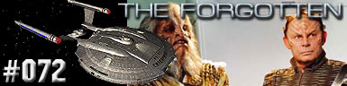
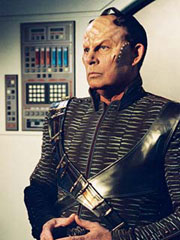
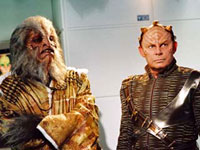
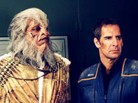

|
Enterprise
Temporada 3

Anlise do episdio por
Salvador Nogueira



|
MANCHETE
DO EPISDIO |
Comentrios:   
"The Forgotten",
apesar do ttulo, no se esquece de responder a todas as pontas
da histria abertas nas ltimas semanas. A comear pelos
aparentemente infinitos reparos exigidos pela Enterprise aps o
confronto com os Xindis em Azati Prime. Nada melhor do que
aproveitar a ocasio para concentrar os esforos em seu
engenheiro-chefe.
Na prtica, o episdio faz por Trip o que "Damage"
fez por T'Pol e Archer, apenas uma semana atrs. Quando, logo na
abertura, o capito faz um discurso para tentar levantar o moral
da tripulao aps a perda de 18 tripulantes, j h indcios
de quem so os "esquecidos" do episdio --as vtimas.
Ou, no caso particular de Trip, sua irm.
Ao ser obrigado a lembrar a importncia da alferes Taylor, ele
quebra esse "senso de diluio", e o peso da morte de
sua irm cai como um piano de desenho animado na cabea dele.
Connor Trinneer faz juz a todas as cenas que escreveram para ele
neste episdio. Ele timo no s imprimindo todo o abalo
emocional sofrido pelo engenheiro com os ltimos eventos e o
reconhecimento da importncia de sua irm, mas tambm
conciliando essa situao com a profunda raiva que ele
naturalmente sente pelos Xindis, e em especial por Degra --um novo
aliado, que, a despeito disso, foi responsvel pela morte de
muitos humanos quando do primeiro ataque Terra.
Ao final, quando Trip finalmente conclui sua carta para os pais da
alferes Taylor, vemos que ele tambm venceu um outro trauma,
muito mais agressivo --ele se reconciliou com a culpa por no ter
se permitido sofrer pela morte de sua irm. Os roteiristas Chris
Black e David Goodman esto de parabns pela forma dramtica,
humana e no-sci-fi com que lidaram com a questo, mostrando que
Jornada nas Estrelas pode --e deve-- ser mais que batalhas
espaciais e anomalias espao-temporais. Jornada sempre foi
melhor quando trouxe seu foco para ns mesmos.
No esforo para que a aliana Xindi no precise ser destruda,
Degra convence Archer a apresentar pessoalmente todas as evidncias
que ele coletou perante o Conselho Xindi. O capito concorda, o
que coloca a Enterprise num novo rumo --a esperana de que seja
possvel encontrar uma soluo diplomtica, como Daniels havia
sugerido.
Os reparos oferecem no s um elemento de continuidade, mas tambm
de ao --Trip e Reed tm a oportunidade de interromper um
vazamento de plasma no exterior do casco, oferecendo tomadas
bonitas de efeitos especiais, que, at mesmo pelas circunstncias,
nos remetem a "Minefield".
Temos aqui um curto, mas forte e consistente, momento para Malcolm.
Somando todos os elementos, "The Forgotten" se
mostra um episdio no somente rico em termos narrativos, como
uma histria extremamente sensvel, que nos lembra de que, a
despeito da aventura e da emoo, o mais importante a forma
como tudo isso ressoa no mundo interior de cada um de ns.
Phlox - "Commander Tucker
reassigned people making repairs here. He said the armory was a higher
priority. Let's see what sort of priority he gives me next time he burns
his fingers."
("O Comandante Tucker redistribuiu o pessoal fazendo reparos
aqui. Ele disse que o arsenal era uma alta prioridade. Vamos ver que
tipo de prioridade ele ir me dar na prxima vez que ele queimar os
dedos.")
Archer - "We're destined to form an alliance, but if you destroy
us, that'll never happen."
("Estamos destinados a formar uma aliana, mas se voc nos
destruir, isto nunca ir acontecer.")
Conselho Xindi-Preguia - "Our contact from the future has
helped us many times."
("Nosso contato no futuro j nos auxiliou muitas vezes.")
Trip - "You had no problem killing Seven million of us! Is Seven
Million and One too much for you to stomach?"
("Voc no teve problema nenhum em matar sete milhes dos
nossos! Sete milhes e um demais para o seu estmago?")
 Rick Berman comenta sobre o episdio que "este se aprofunda
naquilo que est ocorrendo por todo o arco, o que eventualmente ir
ser a concluso da temporada. Isto se relaciona com o Xindi e a arma".
Rick Berman comenta sobre o episdio que "este se aprofunda
naquilo que est ocorrendo por todo o arco, o que eventualmente ir
ser a concluso da temporada. Isto se relaciona com o Xindi e a arma".
 Elenco convidado neste episdio inclui Randy Oglesby e Rick Worthy, em
seus papis de Xindis, alm de Bob Morrisey, que introduz um novo
personagem, um Capito Rptil. Uma participao especial tambm
acontece com o animador Seth McFarlane, criador da srie Family Guy.
Elenco convidado neste episdio inclui Randy Oglesby e Rick Worthy, em
seus papis de Xindis, alm de Bob Morrisey, que introduz um novo
personagem, um Capito Rptil. Uma participao especial tambm
acontece com o animador Seth McFarlane, criador da srie Family Guy.
Escrito por Chris Black e
David Goodman
Direo de LeVar Burton
Exibido em 28/04/2004
Produo: 072
Elenco:
Scott
Bakula como Jonathan Archer
Jolene Blalock como
T'Pol
John Billingsley
como Phlox
Anthony Montgomery
como Travis Mayweather
Connor Trinneer como
Charlie 'Trip' Tucker III
Dominic Keating como
Malcolm Reed
Linda Park como Hoshi Sato
Elenco convidado:
Randy Oglesby como Degra
Rick Worthy como Xindi-Preguia
Bob Morrisey como Capito Rptil
Seth MacFarlane como Engenheiro
Kipleigh Brown como Tripulante Taylor
Sinopse, trivias e ficha
tcnica por Leandro
M.Pinto